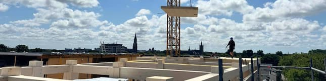
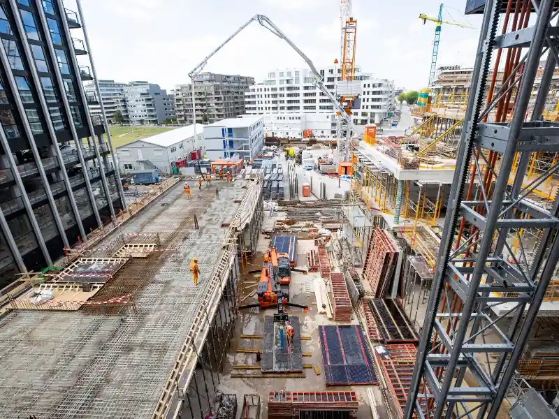
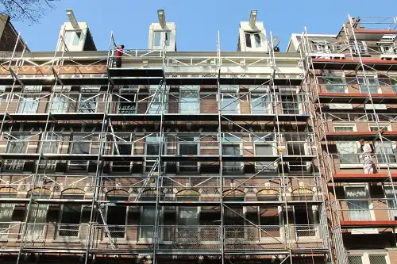

Een bouwproject realiseren lijkt op papier vaak eenvoudiger dan het in werkelijkheid is. Planningen veranderen, besluiten moeten worden genomen en afspraken moeten worden nagekomen. Wij bieden overzicht vanuit de dagelijkse praktijk.
Wij zijn de interim-specialist voor projecten die tijdelijk meer aandacht vragen. Of het nu gaat om uitval, een hoge werkdruk of een naderende oplevering: wij bieden ondersteuning die aansluit bij de fase van uw project.

Wij staan met onze voeten in de klei, niet alleen in de vergaderruimte.
Geen langdurige offertetrajecten of zware organisatiestructuren.
Wij bewaken uw belangen, kwaliteit en planning met een frisse blik.
Direct contact met de expert op locatie.
Niet elk project vraagt om een groot adviesbureau, maar wel om deskundige ondersteuning tijdens de realisatiefase. SkyBuild biedt ervaren professionals die direct bijdragen aan grip op planning, kwaliteit en voortgang.
Wanneer veel activiteiten tegelijkertijd plaatsvinden, helpt structuur om het overzicht te behouden. Wij zorgen voor grip op planning, voortgang en besluitvorming.
Wij treden op als de dagelijkse vertegenwoordiger van de opdrachtgever. Wij bewaken contractuele afspraken, sturen aan op kwaliteit van uitvoering.
Wij zijn de ogen en oren op de bouwplaats. Door frequente controles signaleren wij afwijkingen in kwaliteit of veiligheid voortijdig om faalkosten te voorkomen.
Goede samenwerking is de sleutel tot succes. Wij ondersteunen de dagelijkse coördinatie en zorgen ervoor dat alle partijen strak op elkaar afgestemd blijven.
De eindfase bepaalt de kwaliteit van het eindresultaat. Wij begeleiden het opleverproces nauwgezet, registreren restpunten en bewaken de afhandeling hiervan.
Beslissingen zijn effectief als ze gebaseerd zijn op actuele informatie. Wij leveren heldere, feitelijke rapportages die diepgaand inzicht geven in de status.
SkyBuild is breed inzetbaar in verschillende vastgoedsectoren. Of het nu gaat om nieuwbouw, renovatie of onderhoud: onze interim-professionals kennen de specifieke dynamiek van uw werkveld.

Een bouwproject stopt niet bij het ontwerp; de werkelijke uitdagingen ontstaan tijdens de uitvoering. In ons kenniscentrum vertalen wij complexe theorie naar begrijpelijke, direct toepasbare adviezen.
Alles over de Wkb (Wet kwaliteitsborging) en contractvormen zoals UAV en UAV-GC.
Grip op planning, budget en risico's met methodieken als GROTIK, RISMAN en IPM.
Praktische richtlijnen voor effectief bouwtoezicht en directievoering op locatie.
Het gebruik van moderne software zoals Ed Controls, Snagstream en Relatics.
Checklists voor een foutloze overdracht en het strak beheren van restpunten.

Heeft u vandaag nog ondersteuning nodig op uw project? Of wilt u sparren over de invulling van een interim-rol? Bel ons direct — wij zijn snel bereikbaar en denken graag met u mee.
* We zijn voor u op pad, graag eerst even bellen.